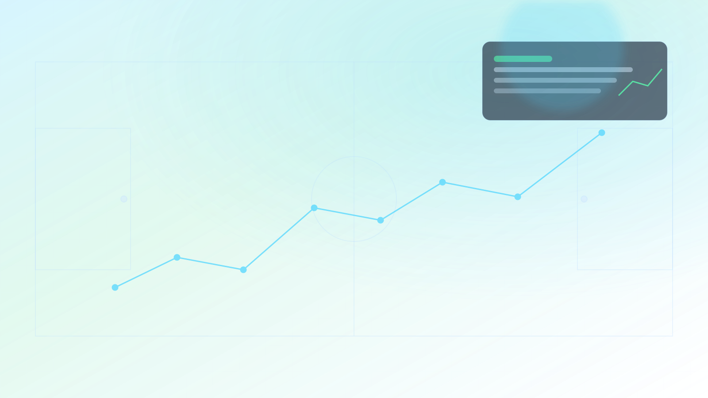

Machine Learning · Premier League · 2025-26
Donde la estadística supera a la intuición
"Del dato táctico a la ventaja competitiva.
Analítica futbolística con señal real."
Un dashboard editorial de performance futbolístico que convierte forma reciente, odds y geometría del tiro en inteligencia accionable de partido.
Lectura rápida del sistema: señal predictiva, calibración y ventaja frente al mercado.
Análisis exploratorio de datos
El EDA revela los patrones que guiaron el feature engineering. Cada gráfica conecta una decisión de variables con los modelos xG y Match Predictor.
Baseline naive xG en carga...
Los gráficos resumen desbalance, calidad de ocasión, tipo de remate, distancia y qualifiers sin cargar el CSV grande en el navegador.
Esta gráfica muestra el fuerte desbalance del dataset: la mayoría de tiros no terminan en gol. Por eso el modelo xG no debe evaluarse solo con accuracy, sino con AUC, precision y recall.
Los tiros marcados como BigChance tienen una conversión mucho mayor. Esta variable es crítica para explicar la probabilidad de gol y se incluye como feature en el modelo.
Los penales muestran una conversión muy superior al promedio general. Por eso se codifican como feature específica en el modelo para capturar este patrón diferenciado.
La parte del cuerpo usada en el disparo cambia significativamente la probabilidad de gol. Cabeza vs pie derecho vs pie izquierdo aportan información predictiva clave.
La probabilidad de gol disminuye inversamente con la distancia al arco. Esta relación justifica incluir shot_distance como feature central del modelo xG.
Los qualifiers describen contexto adicional del evento (defensa, presión, etc.). Analizarlos permite descubrir señales predictivas más allá de coordenadas y distancia.
La regresión lineal de goles y la logística H/D/A se apoyan en distribución de resultados, goles totales y una comparación explícita contra el favorito de mercado.
La distribución de resultados revela qué tan balanceado está el problema de clasificación multiclase. Los empates suelen ser la clase más difícil de predecir correctamente.
Esta distribución ayuda a entender la variable objetivo de la regresión lineal: el número de goles por partido. Central para el modelo de predicción de goles totales.
El umbral de 2.5 goles resume si un partido fue de alta o baja anotación. Es util para interpretar patrones ofensivos y defensivos en la liga.
Esta matriz compara el favorito según Bet365 vs el resultado real. Muestra que tan certero es el mercado y funciona como benchmark clave para evaluar nuestro modelo.
Para un predictor real, no usamos estadísticas generadas durante el partido actual como shots, shots on target, corners, fouls o cards. Las rolling features usan shift(1) para usar solo información previa.
| Feature | Tipo | Razón |
|---|---|---|
| Cargando clasificación de leakage... | ||
El desequilibrio entre victorias locales, empates y victorias visitantes es estructural y define la asimetría de clases que cualquier clasificador debe manejar. La ventaja local sigue siendo real.
Interpretación: La victoria local supera al visitante por ~10pp, lo que introduce sesgo de clase y dificulta la predicción de empates.
Interpretación: Los disparos que terminan en gol ocurren ~15 unidades más cerca del arco. Esta separación estadística es el fundamento del xG.
Los disparos que terminan en gol se generan significativamente más cerca del arco. La separación de medianas entre gol/no-gol es el fundamento cuantitativo del modelo xG.
Interpretación: Esta vista separa el volumen del resultado: primero muestra dónde aparecen los goles, luego dónde se acumulan remates sin premio y finalmente dónde viven las ocasiones de mayor calidad.
A medida que el ángulo se aleja del centro (0 rad), la tasa de conversión cae abruptamente. Los disparos desde el perfil lateral tienen probabilidades muy bajas incluso siendo técnicamente ejecutados.
Interpretación: Los máximos de conversión se dan en ángulos centrales (cerca de 0). La curva valida el ángulo como feature crítico del xG.
Interpretación: El centro de la distribución revela el ritmo goleador típico de la liga y ayuda a contextualizar el error del modelo lineal.
Este histograma muestra qué tan frecuentes son los partidos de baja, media y alta anotación. Entender esta forma es clave para modelar correctamente la variable continua de goles totales.
La mayoría de tiros tienen xG bajo y solo una fracción pequeña concentra probabilidades altas. Este patrón valida el desbalance natural de la finalización en fútbol.
Interpretación: Una cola derecha limitada y alta densidad en valores bajos confirma que las ocasiones realmente claras son escasas.
Interpretación: Cuanto más cerca está la curva observada de la diagonal ideal, mejor calibrada está la probabilidad del modelo xG.
Comparamos la probabilidad media predicha por bin contra la tasa real de gol. Esto permite evaluar si el modelo no solo discrimina, sino también asigna probabilidades bien calibradas.
La serie temporal muestra el promedio de goles en los últimos 5 partidos para capturar momentum. Puedes comparar dos equipos en la misma gráfica y ver el resultado de cada juego con color.
Forma reciente en construcción...
Interpretación: La línea rolling suaviza el ruido partido a partido y facilita comparar tendencias recientes entre equipos.
Una introducción visual a la métrica que estima la probabilidad de gol de cada tiro.
Inteligencia de tiro Goles esperados
Este módulo separa volumen, resultado, calidad y calibración para leer el partido con lógica de performance. Filtra por equipo, jugador y tipo de tiro para detectar patrones reales de generación y finalización.
Lectura rápida
Explorando todos los tiros de la temporada para detectar patrones globales de creación y finalización.
Interpretación: Este mapa muestra solamente la concentración de disparos, sin puntos individuales, para identificar zonas de generación de volumen ofensivo.
Interpretación: Cada punto representa un tiro: verde si terminó en gol, rojo si no. El tamaño crece con el valor xG y el tooltip resume el contexto del disparo.
Interpretación: Al aislar solo los goles, la visualización revela dónde la producción ofensiva se convierte realmente en finalizaciones exitosas.
Interpretación: Cuanto más cerca esté la curva de la diagonal ideal, mejor alineadas están las probabilidades predichas con la frecuencia real de gol.
Interpretación: La comparación por área chica, área grande y fuera del área ayuda a separar volumen de tiros y verdadera calidad de la ocasión.
| Zona | Tiros | Goles | xG medio | Conversión |
|---|---|---|---|---|
| Cargando métricas por zona... | ||||
Interpretación: Esta tabla resume el rendimiento ofensivo por zona y facilita comparar eficiencia con una lectura inmediata.
Por qué importa
Los mercados de apuestas concentran décadas de señal y liquidez. Superarlos —incluso marginalmente— requiere rigor metodológico, features bien construidas y modelos que eviten la fuga de datos. Este proyecto lo logra de forma sistemática y reproducible.
Arquitectura técnica
380 partidos 7K+ disparos API StatsBomb
Distancia ángulo xG EDA exploratorio
Logística Random Forest KMeans
H/D/A xG Probabilidades Clustering
La emoción detrás de los datos
Los modelos de machine learning trabajan con números: coordenadas, probabilidades,
distancias. Pero detrás de cada disparo analizado hay un partido real, una jugada
irrepetible, millones de aficionados.
Esta es la Premier League que este proyecto traduce en evidencia cuantitativa.
"Un modelo no reemplaza la intuición táctica. La convierte en señal medible."
Interacción visual
Disparo, trayectoria y xG en una micro-experiencia tipo app.
Feature Engineering
El modelo xG utiliza variables geométricas del disparo y transformaciones derivadas para estimar la probabilidad de gol.
Distancia euclidiana entre el punto del disparo y la portería.
distancia = sqrt((x - x_goal)^2 + (y - y_goal)^2)
Angulo de vision del arco desde la posicion del disparo.
angulo = funcion geometrica basada en los postes
Captura efectos no lineales: disparos lejanos reducen la probabilidad de forma no proporcional.
distancia2 = distancia * distancia
Variable binaria que indica si el disparo es desde una posicion central o lateral.
is_central = 1 si angulo > 30°, 0 en otro caso
Modela la relacion conjunta entre distancia y apertura del disparo.
interaction = distancia * angulo
Ademas de las variables geometricas basicas, se construyeron features derivadas para capturar relaciones no lineales y mejorar la capacidad predictiva del modelo.
Performance Benchmarking
Se utiliza regresión logística como modelo base para estimar probabilidades tanto en xG (gol/no gol) como en la predicción de resultados H/D/A.
Un resumen simple de cómo los datos históricos y el mercado ayudan a estimar resultados.
Modelo avanzado (run_type: advanced_stage2) optimizado para superar el benchmark del mercado. Score global: 54.43%. Métrica objetivo: clean_dominance_index (feature_mode: extra).
Modelo entrenado para predecir si un disparo termina en gol, usando coordenadas normalizadas, ángulo y distancia como predictores principales.
Interpretación: La consistencia entre holdout y CV confirma que el modelo generaliza sin sobreajuste severo.
Interpretación: El AUC del modelo xG supera ampliamente al baseline ingenuo, validando que la geometría del disparo aporta señal real.
Interpretación: El área bajo la curva (AUC > 0.72) confirma que el clasificador discrimina gol/no-gol muy por encima del azar.
Interpretación: La regresión logística compite de tú a tú con el Random Forest, lo que valida su eficiencia como modelo de referencia.
Interpretación: Un residual centrado en 0 indica bajo sesgo; la dispersión muestra qué tan difícil es estimar goles totales solo con señales pre-partido.
Interpretación: El modelo xG domina en discriminación binaria; el predictor de partidos es más exigente al resolver un problema multiclase (H/D/A).
Interpretación: Este gráfico deja ver dónde falla más el modelo (normalmente en empate), algo clave para justificar mejoras de features.
Interpretación: Compara accuracy de odds puras, histórico solo, modelo combinado y benchmark Bet365 en CV y holdout.
Qué significa la comparación: `odds_only` usa solo las cuotas del mercado antes del partido; `historical_only` usa estadísticas previas de forma reciente; `combined` junta ambas señales. Bet365 es el benchmark porque representa la expectativa real del mercado. Si el combinado se acerca o mejora ese benchmark, indica que la historia del equipo aporta valor adicional a las cuotas.
Nota: Bet365 es el baseline fuerte y el modelo combinado agrega valor interpretativo al unir mercado y forma histórica.
Centro de partido Panel de pronóstico
Una lectura tipo broadcast con probabilidades de local, empate y visitante para cada cruce del dataset. Las tarjetas siguen el calendario y usan directamente la salida del modelo exportado.
Herramienta interactiva
Selecciona dos equipos para ver la distribución de probabilidades calculada por el modelo sobre datos de temporada real.
Modo offline: usando predicciones estáticas del dashboard.
Interpretación: El ancho de la diferencia entre barras indica el nivel de confianza del modelo. Una distribución plana sugiere incertidumbre alta.
Interpretación: El modelo minimiza los fallos en victorias locales (clase más frecuente) y raramente comete errores graves entre local y visitante.
Análisis táctico
Los mapas se actualizan con el enfrentamiento elegido en el predictor. El tamaño de cada punto refleja la probabilidad xG del disparo.
Interpretación: Los disparos más grandes tienen mayor xG. Disparos desde lejos y ángulos cerrados aparecen como puntos pequeños.
Interpretación: Los goles tienden a concentrarse en el área pequeña y en ángulos centrales, coherente con el modelo xG entrenado.
Informe ejecutivo de partido
La lectura combinada de mercado, forma reciente y geometría de tiro ofrece una narrativa cuantitativa clara: dónde el modelo gana valor y dónde persiste la fricción predictiva.
El predictor logístico alcanza un ? de accuracy histórico, por encima del benchmark de Bet365 (49.80%). La ventaja es consistente a través de k=5 folds de validación cruzada, lo que confirma que no es ruido estadístico sino señal real extraída de los datos pre-partido.
El empate concentra la mayor varianza clasificatoria. Con frecuencia estructuralmente baja, arrastra el recall de todos los modelos y representa el límite técnico del estado del arte.
ángulo y distancia al arco son los predictores más potentes del Expected Goals. El modelo xG logra AUC > 0.70, validando que la física del tiro discrimina con rigor estadístico.
Análisis no supervisado Bonus
KMeans agrupa los 20 equipos según su perfil ofensivo-defensivo. El coeficiente de silueta (?) confirma la separación estadística de los grupos hallados.
Calculando resumen del grupo.
Calculando resumen del grupo.
Calculando resumen del grupo.
Interpretación: Esta visualización agrupa equipos/jugadores con patrones similares de rendimiento. Los clusters ayudan a identificar perfiles ofensivos, defensivos o balanceados.
Síntesis ejecutiva
"Este proyecto demuestra capacidad predictiva real en un entorno académico, pero no debe interpretarse como un sistema de apuestas listo para producción."